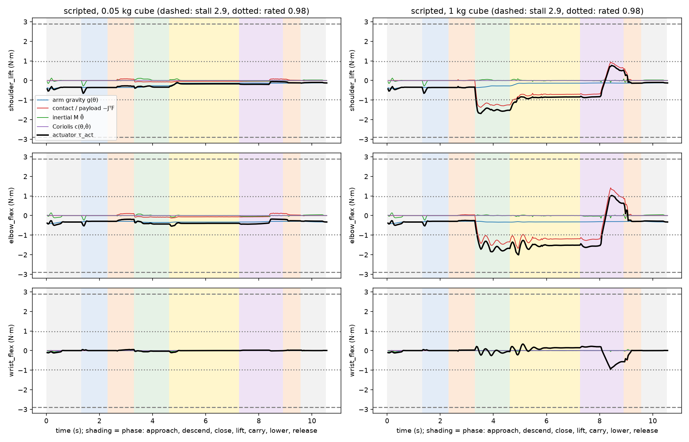
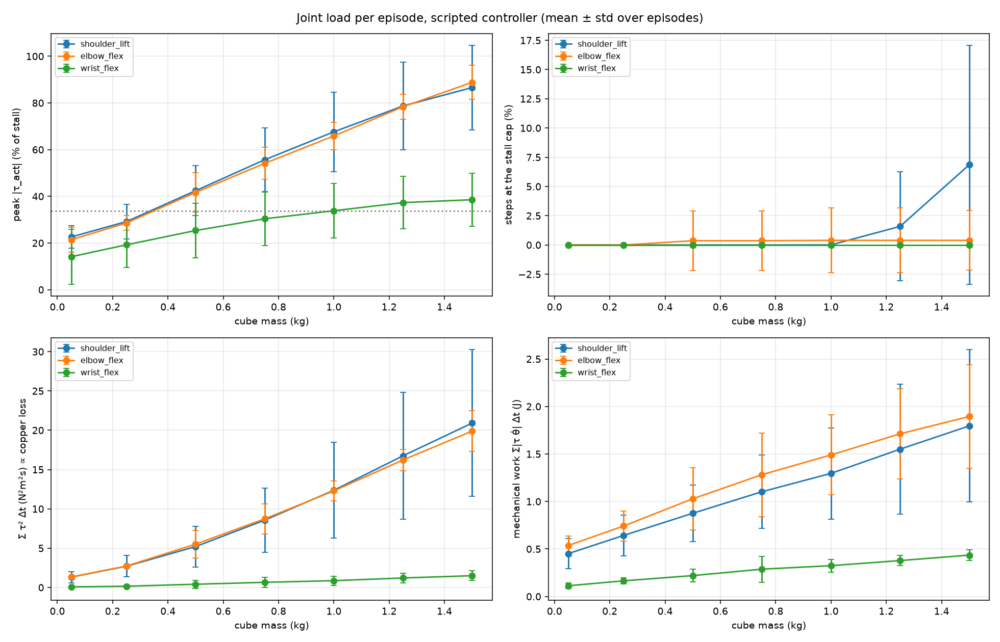
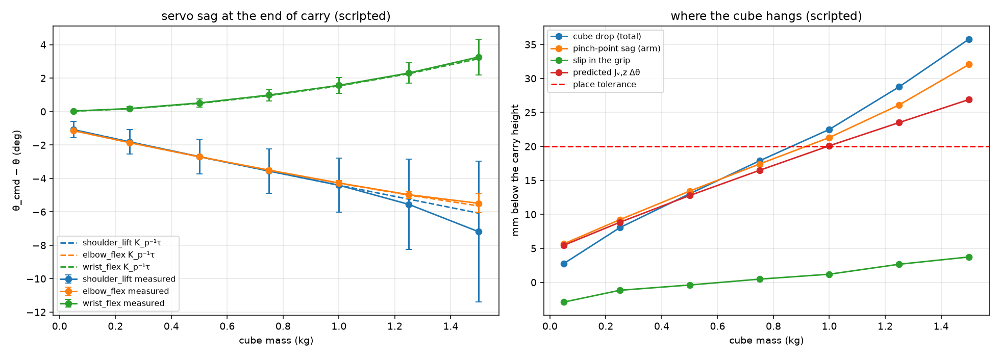
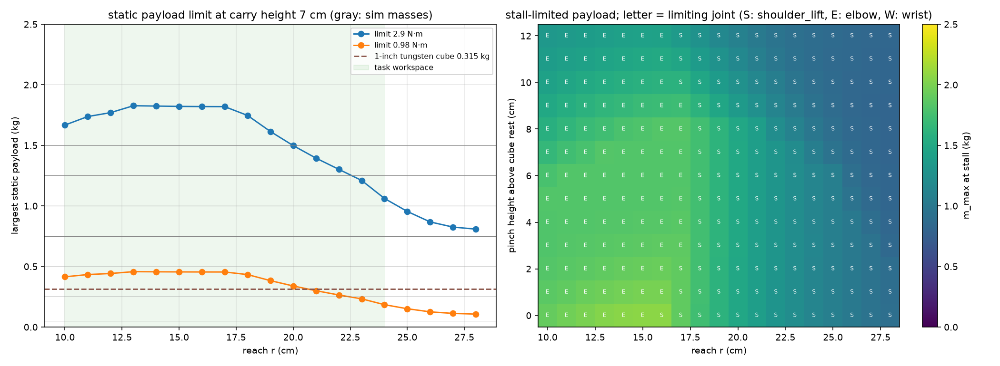
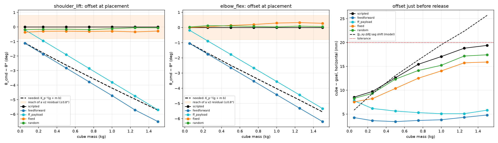
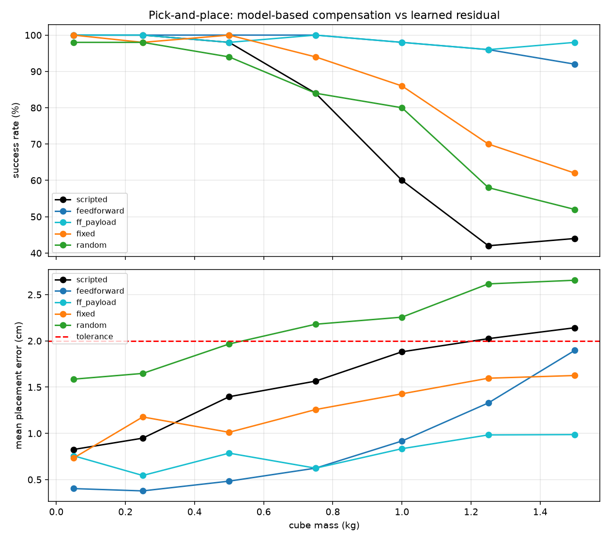
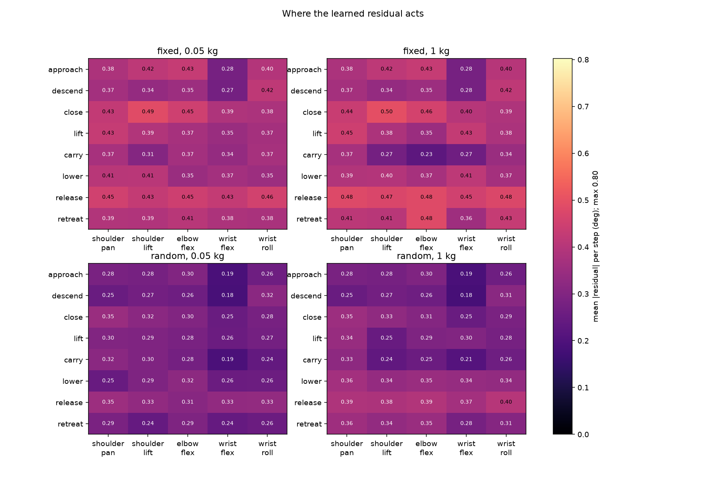

SO-101 Payload Dynamics
Where the joint torque goes when the arm carries a 0.05–1.5 kg cube, why the arm misses the goal with heavy cubes, how a gravity-compensating feedforward fixes it, and what the residual SAC policies actually learned. The second half explains the RL model in full.
Findings
- The rigid-body model explains the simulator almost exactly. τ = Mθ̈ + c + g + τcontact balances MuJoCo to 4.6×10⁻⁴ N·m. The payload torque m·Jvᵀ(−g) and the servo sag Kp⁻¹τ fit with R² ≥ 0.994 on every loaded joint whenever no joint saturates.
- Payload gravity dominates; dynamics barely matter. Inertial and Coriolis terms stay under about 0.1 N·m. At 1 kg the shoulder and elbow each carry about 2 N·m, two thirds of stall.
- Heavy cubes miss because the position servos sag, and the sag also shifts the cube sideways. At 1 kg the shoulder settles 4.4° and the elbow 4.3° short of their commands. The cube hangs 22 mm low and sits 17 mm off the goal just before release, so the scripted controller lands near the 2 cm tolerance and succeeds only 60% of the time.
- Above 1.25 kg the shoulder hits the stall cap (10 of 50 episodes at 1.25 kg, 28 of 50 at 1.5 kg). There the linear sag model breaks: the arm falls further than Kp⁻¹τ predicts.
- Model-based gravity compensation beats both learned policies by a wide margin. Adding Kp⁻¹(g + m·b) to each joint target, with the mass known, gives 98% at 1.0 kg and 92–98% at 1.5 kg. The fixed-mass SAC policy gets 86% and 62%; the random-mass one gets 80% and 52%.
- The v2 residual cannot compensate sag even in principle. The scripted part pulls the command back to its IK target every step, so the residual can hold the command at most 0.2 × 0.07 rad = 0.8° away from it. Compensation needs 4–6°. The policies instead make small corrections throughout the episode, reducing the sideways offset by 2–3 mm, which is just enough to pull some 2.1–2.6 cm misses back under 2 cm.
- On the real STS3215 servos at rated torque (0.98 N·m), the static payload limit is 0.41–0.46 kg within 18 cm reach and 0.18 kg at 24 cm. A 1-inch tungsten cube (315 g) is safe out to about 20 cm.
Videos
Every clip replays one evaluation episode with the same start and goal for each controller. The camera looks from the side so vertical sag shows, and the inset in each tile looks straight down on the goal with the arm hidden. The trained policies are seed 0 of each v2 run.
1.0 kg: scripted vs gravity feedforward vs both SAC policies
Live torque and sag at 1.0 kg
Live torque and sag at 1.0 kg: fixed vs random SAC
The same controller, four masses
1.5 kg
Where the learned residual still fails
Regenerate with uv run python pick_place/scripts/record_videos.py (about 1 minute). The files are saved in checkpoints/pick-place/videos/.
Torque model
Lynch & Park notation. θ ∈ ℝ⁵ are the arm joints (shoulder pan, shoulder lift, elbow flex, wrist flex, wrist roll); the gripper is the sixth actuated joint. Every term is written as the torque the motors must supply.
A cube of mass m held at the pinch point adds, when the arm is still,
Jv is the 3×5 linear Jacobian of the cube center in {s}. Because only the z-component of gravity acts, bi = 9.81 · Jv,z,i: the payload torque on joint i is the cube weight times how fast that joint raises the cube.
Why the arm sags
The STS3215 servos, and the MuJoCo actuators that model them, are pure position servos with no gravity compensation:
So the steady-state error grows linearly with the cube mass, and so does the pinch-point position error. The horizontal part Jv,xyΔθ is what moves the cube off the goal.
Largest payload a posture can hold
with L = 2.9 N·m (stall, the sim's cap) or 0.98 N·m (STS3215 12 V rated, continuous). The argmin is the limiting joint.
| Quantity | Value | Source |
|---|---|---|
| Physics step / control step | 1 ms / 33 ms | SimConfig.timestep_s, n_substeps = 33 |
| Episode | 320 steps = 10.56 s | PickPlaceConfig.task.max_episode_steps |
| Kp arm (N·m/rad) | 20, 20, 20, 6, 4 | MJCF <position kp=…>, Kd from dampratio=1 |
| Torque cap | ±2.9 N·m | jnt_actfrcrange, STS3215 stall 30 kg·cm |
| Rated torque (real servo) | 0.98 N·m | STS3215 12 V, 10 kg·cm |
| Finger-pad friction μ | 1.5 | GripperConfig.pad_friction, elliptic cone |
Does the model hold?
Each control step, torque_terms() reads the MuJoCo state and splits it term by term. MuJoCo solves M q̈ + bias = τact + τpassive + τconstraint, so:
| Term | MuJoCo quantity |
|---|---|
| τ_act | qfrc_actuator (already clipped to ±2.9) |
| M θ̈ | mj_mulM(qacc) |
| g(θ) | mj_rne on a scratch copy with θ̇ = 0, θ̈ = 0 |
| c(θ, θ̇) | qfrc_bias − g |
| τ_passive | −qfrc_passive (zero here: no joint damping in the model) |
| τ_contact | −qfrc_constraint (cube, table, joint limits) |
The model is then checked against the simulator in the hold window (the last 20 steps of CARRY, with the arm waiting above the goal holding the cube), over all 350 scripted episodes:
| Joint | Episodes | Payload R² | max |err| (N·m) | Sag R² | max |err| (deg) |
|---|---|---|---|---|---|
| shoulder_lift | unsaturated | 1.0000 | 0.022 | 0.99999 | 0.03 |
| shoulder_lift | all | 0.9890 | 0.688 | 0.855 | 8.2 |
| elbow_flex | unsaturated | 0.9998 | 0.036 | 0.99977 | 0.12 |
| elbow_flex | all | 0.9917 | 0.457 | 0.9916 | 1.3 |
| wrist_flex | unsaturated | 0.9962 | 0.024 | 0.9945 | 0.34 |
| wrist_flex | all | 0.9881 | 0.150 | 0.9876 | 1.4 |
Largest equation-of-motion residual over every episode of every controller: 4.6×10⁻⁴ N·m, which is within the contact solver's tolerance. 42 of the 350 scripted episodes hit the stall cap (28 at 1.5 kg, 10 at 1.25 kg). All of the large errors come from those episodes: once τ is clipped at 2.9 N·m, the servo cannot hold the posture, and the arm keeps sinking past Kp⁻¹τ.

Torque over an episode

- Light cube: the arm only holds itself up. Shoulder and elbow sit near −0.3 N·m of arm gravity the whole time.
- 1 kg cube: once the grasp closes (≈ 3.3 s), the contact term, which is the cube's weight through Jᵀ, jumps to −0.7 to −1.3 N·m on the shoulder and −1.2 to −1.5 N·m on the elbow, depending on the pose. The elbow stays above the rated torque through lift and carry; the shoulder exceeds it during the lift.
- Lowering flips the sign. The script lowers to 3 mm below the resting height, so the table pushes the cube up while the jaws still hold it. Shoulder and elbow torque swing to +0.8 and +1.0 N·m as the arm presses the cube into the table. A real servo would be just as loaded here, so it is worth knowing for hardware.
- Inertial and Coriolis terms stay under about 0.1 N·m apart from short spikes at phase changes. The motion is quasi-static, so a static gravity model is enough.
- The wrist rings during lift with a heavy cube: its Kp is 6, so its natural frequency is low. In the poses we inspected, the top-down IK also puts it at its +95° joint limit, where the limit constraint carries part of the load.
Load vs mass
| Mass (kg) | Lift peak | Lift RMS | Elbow peak | Elbow RMS | Wrist peak | Lift steps at cap | Σ τ² Δt lift |
|---|---|---|---|---|---|---|---|
| 0.05 | 0.66 (23%) | 0.34 | 0.62 (21%) | 0.36 | 0.41 (14%) | 0% | 1.3 |
| 0.25 | 0.85 (29%) | 0.49 | 0.83 (29%) | 0.51 | 0.56 (19%) | 0% | 2.7 |
| 0.5 | 1.23 (42%) | 0.68 | 1.21 (42%) | 0.72 | 0.73 (25%) | 0% | 5.2 |
| 0.75 | 1.61 (56%) | 0.87 | 1.57 (54%) | 0.91 | 0.88 (30%) | 0% | 8.6 |
| 1.0 | 1.96 (68%) | 1.05 | 1.91 (66%) | 1.08 | 0.98 (34%) | 0% | 12.4 |
| 1.25 | 2.28 (79%) | 1.22 | 2.27 (78%) | 1.24 | 1.08 (37%) | 1.6% | 16.8 |
| 1.5 | 2.51 (87%) | 1.37 | 2.58 (89%) | 1.37 | 1.12 (39%) | 6.9% | 20.9 |
Peak and RMS torques are in N·m, with peak as a share of the 2.9 N·m cap; all are means over 50 scripted episodes. The peak is a mean across episodes, so a single episode can reach the cap even when the mean peak is below it. Σ τ² Δt (N²m²s) is proportional to the copper loss in the servo, since current scales with torque. It grows about 16× from 0.05 to 1.5 kg, which is the number that matters for overheating a real STS3215.

Sag and drop
| Mass (kg) | Lift sag meas / model (°) | Elbow sag meas / model (°) | Drop total (mm) | = arm | + slip | Model Jv,zΔθ | Grip ΣN (N) | μΣN / mg |
|---|---|---|---|---|---|---|---|---|
| 0.05 | −1.08 / −1.08 | −1.14 / −1.14 | 2.8 | 5.7 | −2.9 | 5.5 | 30.8 | 94 |
| 0.25 | −1.81 / −1.81 | −1.86 / −1.86 | 8.0 | 9.2 | −1.2 | 8.8 | 32.6 | 20 |
| 0.5 | −2.70 / −2.70 | −2.70 / −2.71 | 13.0 | 13.4 | −0.4 | 12.8 | 32.8 | 10 |
| 0.75 | −3.56 / −3.56 | −3.50 / −3.51 | 17.9 | 17.4 | 0.5 | 16.5 | 32.5 | 6.6 |
| 1.0 | −4.41 / −4.41 | −4.27 / −4.29 | 22.5 | 21.3 | 1.2 | 20.1 | 32.3 | 4.9 |
| 1.25 | −5.55 / −5.24 | −4.97 / −5.00 | 28.8 | 26.1 | 2.7 | 23.5 | 31.9 | 3.9 |
| 1.5 | −7.19 / −6.08 | −5.49 / −5.65 | 35.8 | 32.1 | 3.7 | 26.9 | 31.1 | 3.2 |
- Sag is θcmd − θ in the hold window. The model matches it to 0.02° until the shoulder starts saturating at 1.25 kg (highlighted).
- Drop is how far the cube center hangs below the scripted carry height. It splits into the pinch point's own sag (arm) and the cube sliding in the jaws (slip). The arm part follows Jv,zΔθ to within 0.2–1.2 mm up to 1 kg. The gap grows above that because a 5–7° sag is no longer small enough for the linear JvΔθ estimate, and because the shoulder saturates.
- The grip never lets go. The jaw squeeze stays at about 31–33 N whatever the mass. Friction can hold μΣN = 1.5 × 32 ≈ 48 N, against a weight of 14.7 N at 1.5 kg, so the margin is still 3.2×. Slip stays under 4 mm; grip strength is not the failure mode.
- Even at 0.05 kg the arm sags 1.1° from its own weight. The scripted waypoints were tuned with that sag already in place.

Payload capacity
capacity_map() solves the top-down IK on a grid of reach r (10–28 cm, in front of the robot) and pinch height h (0–12 cm), then applies the mmax formula at each point.
| Reach (cm) | 10 | 12 | 14 | 16 | 18 | 20 | 22 | 24 | 26 | 28 |
|---|---|---|---|---|---|---|---|---|---|---|
| Stall 2.9 N·m (kg) | 1.67 | 1.77 | 1.82 | 1.82 | 1.75 | 1.50 | 1.30 | 1.06 | 0.87 | 0.81 |
| Rated 0.98 N·m (kg) | 0.41 | 0.44 | 0.46 | 0.45 | 0.43 | 0.34 | 0.26 | 0.18 | 0.13 | 0.11 |
| Limiting joint | elbow | elbow | elbow | elbow | shoulder | shoulder | shoulder | shoulder | shoulder | shoulder |
Close to the base the elbow is the weak joint; beyond about 17 cm the shoulder takes over. At stall, 1.5 kg fits only inside 20 cm and 1.25 kg inside about 23 cm. This is why the 1.5 kg runs saturate: random goals often lie at 20–24 cm.

Model-based vs learned
Five controllers ran on the same 50 start/goal seeds at each mass, the same seeds as the earlier comparison:
scripted
IK waypoints only, no dynamics. The baseline.
feedforward
Scripted, but each target θ* becomes θ* + Kp⁻¹(g(θ*) + m·b(θ*)), using the true mass while carrying. FeedforwardPickPlace.
ff_payload
Same, but only the m·b part, leaving the arm's own-weight sag the script was tuned with.
fixed / random
The v2 residual SAC policies, 5 seeds each, 10 episodes per seed per mass.
| Mass (kg) | scripted | feedforward | ff_payload | fixed SAC | random SAC |
|---|---|---|---|---|---|
| 0.05 | 100% | 100% | 100% | 100% | 98% |
| 0.25 | 100% | 100% | 100% | 98% | 98% |
| 0.5 | 98% | 100% | 98% | 100% | 94% |
| 0.75 | 84% | 100% | 100% | 94% | 84% |
| 1.0 | 60% | 98% | 98% | 86% | 80% |
| 1.25 | 42% | 96% | 96% | 70% | 58% |
| 1.5 | 44% | 92% | 98% | 62% | 52% |
The scripted, fixed and random numbers reproduce the earlier 5-seed comparison. With an exact mass, a single line of dynamics beats 300k steps of SAC. The reason shows up in what each controller does to the command just before release:

| At 1.0 kg | Lift offset (°) | Elbow offset (°) | Needed (°) | Cube–goal before release (mm) | Carry drop (mm) |
|---|---|---|---|---|---|
| scripted | 0.00 | 0.00 | −4.2 / −4.0 | 17.0 | 22.5 |
| feedforward | −4.72 | −4.43 | −4.7 / −4.6 | 3.8 | 4.6 |
| ff_payload | −3.80 | −3.56 | −4.6 / −4.5 | 5.1 | 6.1 |
| fixed SAC | −0.29 | +0.29 | −4.3 / −4.1 | 14.0 | 23.7 |
| random SAC | −0.12 | +0.04 | −4.3 / −4.1 | 15.2 | 22.5 |
Why the residual cannot compensate
The scripted controller tracks its target from the commanded angle: each step it outputs clip(θ* − θcmd, ±rate) / Δθmax. If the residual pushes the command off by δ, the script pulls the full δ back on the next step. Steady state is reached when the two cancel:
test_residual_can_offset_the_command_by_at_most_scale_times_delta_max confirms it: with a = +1 on every step, the command sits exactly 0.014 rad above θ* during lowering. The policies can steer while the arm is moving between waypoints, where the script is rate-limited, but they cannot hold an offset. Fixing heavy-cube placement needs a 4–6° offset.

What the RL policies actually do

- Both policies act all the time, not just with heavy cubes. The fixed policy uses about half its range (0.3–0.5° per step) in every phase, at 0.05 kg as much as at 1 kg. The random policy uses less (0.2–0.4°) because the ‖a‖² penalty costs it on the many light episodes where correction does not pay.
- Before the grasp, the action is identical at every mass (approach 0.381°, descend 0.351° in every row). Nothing in the observation reveals the mass until the cube is lifted.
- After the grasp, activity rises with mass. From 0.05 to 1.5 kg, the fixed policy goes from 0.38° to 0.43° in lift, 0.38° to 0.44° in lower and 0.44° to 0.49° in release; the random policy goes from 0.28° to 0.40° in lower. The policies do sense the load, through one observation channel: θcmd − θ, which equals Kp⁻¹τ at rest. The servo error is an implicit torque sensor. An earlier summary said neither policy senses mass; this corrects it. They have no direct mass input, but they see its effect.
- Their net effect is a 2–3 mm smaller cube–goal offset at 1 kg (17.0 → 14.0 mm for fixed). That turns many 2.1–2.6 cm misses into 1.6–1.9 cm successes, which matches the 60% → 86% improvement.
The RL model in detail
It is a residual policy: SAC learns a small correction added to the scripted IK controller, not the whole motion. Both experiments use the same model and code. The only difference is the cube mass in training: always 1.0 kg (fixed) or uniform in 0.05–1.0 kg per episode (random).
Input: the observation (39 numbers)
| Slice | Size | Contents | Why it is there |
|---|---|---|---|
| 0–5 | 6 | θ: measured joint angles (5 arm + gripper), rad | where the arm is |
| 6–11 | 6 | θ̇: joint speeds, rad/s | motion, settling |
| 12–17 | 6 | θcmd − θ: command error | = Kp⁻¹τ at rest: the load signal |
| 18–23 | 6 | previous executed action | smoothness, phase cue |
| 24–26 | 3 | pinch point ppinch in {s}, m | gripper position |
| 27–29 | 3 | cube center pobj in {s} | ground-truth cube (no camera in sim) |
| 30–32 | 3 | pobj − ppinch | grasp alignment, slip |
| 33–35 | 3 | goal pgoal in {s} | where to place |
| 36–38 | 3 | pgoal − pobj | remaining placement error |
The mass is never observed directly. The observation is standardized by VecNormalize (running mean and std, frozen at evaluation and saved as vecnormalize.pkl). The policy sees no time step or phase; it infers the phase from the state and the previous action.
Output: the action (6 numbers)
- a ∈ [−1, 1]⁶, one number per actuated joint: 5 arm joints plus the gripper.
- Executed action: e = clip(uscript + 0.2 a, −1, 1). The gripper entry of a is forced to 0 (
arm_only), so the script alone opens and closes the jaw. - The env turns e into command increments: θcmd,arm += 0.07·earm rad and θcmd,grip += 0.1·egrip rad, clipped to joint limits. The servos track θcmd for 33 ms.
- Training samples a ~ tanh(𝒩(μ, σ)) for exploration. Evaluation uses the deterministic a = tanh(μ).
Reward and penalties
| Stage | Value | Active when |
|---|---|---|
| reach | 0.25 (1 − tanh(10 d)) | always; d = ‖pobj − ppinch‖ |
| grasp | 0.35 | both finger pads touch the cube |
| lift | 0.35 → 0.5 | grasped; linear in lift height up to 4 cm |
| carry | 0.5 → 0.75 | grasped and lifted ≥ 1 cm; 0.5 + 0.25 (1 − tanh(10 dgoal)) |
| place (lower) | 0.75 → 0.9 | grasped within 2 cm of goal; grows as it comes down |
| placed | 0.9 | released low (≤ 1.5 cm) over the goal, resting within 2 cm |
| success | 1.0 | placed and neither pad touches the cube |
- Taking the max, not the sum, means each stage starts where the last one ends. The reward can only go up as the task advances, with no double counting.
- 0.01‖e‖² charges every executed motion, scripted or not, and favors smooth motion.
- 0.1‖a‖² is the v2 residual penalty, applied in the wrapper. It charges only the policy's own correction: full-scale correction on all 5 arm joints costs 0.5 per step, half the success reward. So the policy corrects only where it pays. v1 had no penalty and scale 0.5, and it overrode the script and placed worse.
- No early termination: every episode runs 320 steps. Success is read at the last step.
The policy network (Soft Actor-Critic)
Actor π(a | o)
- 39 → 256 → ReLU → 256 → ReLU
- two heads: μ (6) and log σ (6)
- a = tanh(μ + σ ε), ε ~ 𝒩(0, I)
- 78,860 parameters
Twin critics Q₁, Q₂(o, a)
- 45 (39 + 6) → 256 → 256 → 1, each
- plus slowly-updated target copies (τ = 0.005)
- 155,650 parameters for the pair
- min(Q₁, Q₂) curbs overestimation
Each update samples 256 transitions from the replay buffer and minimizes three losses:
α trades exploration against reward and tunes itself. In the trained fixed-mass seed 0 it ended at α ≈ 0.0023, so the policy became nearly deterministic.
| Hyperparameter | Value | Hyperparameter | Value |
|---|---|---|---|
| Algorithm | SAC (SB3 2.9.0) | Steps per seed | 300,000 (≈ 937 episodes) |
| Learning rate | 3×10⁻⁴ (Adam) | Seeds | 5 per experiment |
| Discount γ | 0.98 (horizon ≈ 50 steps) | Replay buffer | 300,000 (holds everything) |
| Batch size | 256 | Learning starts | 100 steps |
| Updates | 1 gradient step per env step | Target update τ | 0.005 |
| Entropy coef. | auto, target −6 | Obs normalization | VecNormalize, obs only |
| Residual scale | 0.2 | Residual penalty | 0.1 ‖a‖² |
| Envs | 1 (DummyVecEnv) | Checkpoint | every 25k steps, resumable |
How it is written
Everything is in src/rbe_501_so101/pick_place/env.py, built on the pick-and-lift modules. These are condensed versions of the real code, in the order you would write them.
1. The environment: what the agent sees and does
class SO101PickPlaceEnv(SO101PickLiftEnv): # a gymnasium.Env
# action_space = Box(-1, 1, (6,)) joint-command increments
# observation_space = Box(-inf, inf, (39,))
def reset(self, seed=None, options=None):
self.backend.reset(...) # arm to home pose
p_s, yaw = self._start_pose(options) # random cube start and goal in the workspace
self.backend.place_object(p_s, yaw, self._cfg.mass.sample(self.np_random)) # <- mass enters here
return self._observation(), self._info()
def step(self, action):
action = np.clip(action, -1, 1)
self.backend.apply_delta(action[:5] * 0.07) # theta_cmd += delta (arm)
self.backend.apply_gripper_delta(action[5] * 0.1)
self.backend.step() # 33 x 1 ms physics
terms = self._reward(state, pads, p_goal, p_release, action, prev_action)
truncated = self._step_count >= 320
return self._observation(), terms.total, False, truncated, info2. The reward
reach = 0.25 * (1 - tanh(10 * dist(cube, pinch)))
grasp, lift, carry, lower = held_stages(...) if grasped else (0, 0, 0, 0)
place = max(lower, 0.9 if is_placed(...) else 0)
success = 1.0 if is_success(...) else 0
total = max(reach, grasp, lift, carry, place, success) - 0.01 * action @ action3. The residual wrapper: where the policy's output goes
class PlaceResidual(ResidualPickLift): # gymnasium.Wrapper
def step(self, a):
a = a.copy(); a[-1] = 0.0 # arm_only: the script owns the gripper
u = self._controller(self._obs) # scripted action from IK waypoints
executed = np.clip(u + 0.2 * a, -1, 1) # residual_scale = 0.2
obs, r, term, trunc, info = self.env.step(executed)
return obs, r - 0.1 * (a @ a), term, trunc, info # residual_penalty = 0.14. Training
run = PlaceRun(ObjectMassConfig(mode="fixed", fixed_kg=1.0)) # fixed
run = PlaceRun(ObjectMassConfig(mode="random", range_kg=(0.05, 1.0))) # random
venv = DummyVecEnv([lambda: Monitor(make_env(run.mass, run), log_dir)])
env = VecNormalize(venv, norm_obs=True, norm_reward=False, gamma=0.98)
model = SAC("MlpPolicy", env, learning_rate=3e-4, gamma=0.98, batch_size=256,
buffer_size=300_000, target_entropy="auto", seed=seed, device="cuda")
model.learn(total_timesteps=300_000) # in 25k chunks with resumable checkpoints
model.save(seed_dir / "model.zip"); env.save(seed_dir / "vecnormalize.pkl")5. Evaluation
policy = NormalizedPolicy(SAC.load(".../model.zip"), VecNormalize.load(".../vecnormalize.pkl"))
for mass in (0.05, 0.25, 0.5, 0.75, 1.0, 1.25, 1.5):
env = make_env(ObjectMassConfig(mode="fixed", fixed_kg=mass), run)
for i in range(50): # same seeds 20000+i for every controller
obs, _ = env.reset(seed=20_000 + i)
while not truncated:
obs, _, _, truncated, info = env.step(policy(obs)) # deterministic tanh(mu)
success += info["is_success"]Commands
uv run python pick_place/scripts/pick_place_fixed.py train --seeds 0 1 2 3 4
uv run python pick_place/scripts/pick_place_random.py train --seeds 0 1 2 3 4
uv run python pick_place/scripts/pick_place_fixed.py compare --episodes 50 --plot compare.png
uv run python pick_place/scripts/torque_analysis.py # this page's figures, about 3.5 min on 20 cores
uv run python pick_place/scripts/torque_analysis.py --plot-only # redraw from sweep.pkl
uv run pytest pick_place/tests/test_torque.py # 15 tests of the dynamics codeNew files for this analysis
| File | What it holds |
|---|---|
src/rbe_501_so101/pick_place/torque.py | torque_terms, ArmStatics (g, b, Jv, sag, capacity), capacity_map, record_episode → Trace / TraceSummary, FeedforwardPickPlace |
pick_place/scripts/torque_analysis.py | parallel sweep of 5 controllers × 7 masses × 50 episodes, 8 figures, report.txt |
pick_place/tests/test_torque.py | 15 tests: EoM balance, gravity hold, payload model, sag, drop split, grip margin, capacity, feedforward, residual cap |
What to do next
- Paper framing. This analysis gives the paper its dynamics backbone: the learned residual recovers part of what one line of gravity compensation fixes. The comparison is fair because both start from the same script and the same seeds.
- Estimate the mass online instead of assuming it. At rest, the observation already contains Δθ = Kp⁻¹(g + m b), so m̂ = bᵀ(KpΔθ − g) / ‖b‖², least squares over the loaded joints during lift. Feeding m̂ to the feedforward gives a controller that needs no oracle and runs on the real SO-101 with no learning.
- A v3 residual that can actually compensate: make the policy output an absolute offset added to θ* (not a per-step increment the script undoes), or put the residual on top of the feedforward. Either removes the 0.8° cap.
- Hardware: keep the real tests at ≤ 18 cm reach with the 15 g and 315 g cubes, log STS3215 present-load during carry, and compare it with the τ = g + m b curve from
ArmStatics. That is the sim-to-real torque validation.